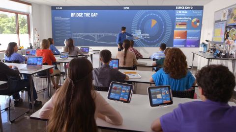

Education and E-Learning
Multimedia plays a pivotal role in modern education, offering tools that enhance the learning experience. Interactive learning tools such as videos and animations engage students by presenting information in dynamic ways. Virtual classrooms utilize multimedia resources to create immersive environments where students can participate in discussions and access materials in real-time, regardless of their location. Additionally, educational games leverage multimedia to teach concepts through fun, interactive play, making learning enjoyable and effective.
Entertainment
The entertainment industry thrives on multimedia, utilizing a variety of content formats to engage audiences. Movies and television shows employ special effects, computer-generated imagery (CGI), and sound design to create compelling narratives that captivate viewers. Music videos combine visual storytelling with audio elements, enhancing the overall impact of the music. Video games, one of the fastest-growing entertainment mediums, rely on high-quality graphics, sound effects, and interactive gameplay to provide immersive experiences that transport players into different worlds.
Advertising and Marketing
In the competitive world of advertising and marketing, multimedia has become an essential tool for capturing consumer attention. Digital advertisements often incorporate videos, animations, and interactive elements that engage viewers and convey messages effectively. Social media campaigns leverage multimedia content, such as GIFs and infographics, to create shareable moments that resonate with audiences. Furthermore, interactive product demos allow consumers to experience products virtually, increasing engagement and driving sales.
Journalism and Media
Multimedia has transformed journalism, enabling storytellers to present information in richer, more engaging ways. Digital news platforms utilize a combination of text, images, videos, and infographics to convey complex stories effectively. Documentaries benefit from multimedia elements that combine narration, visuals, and sound to immerse viewers in the subject matter. Podcasts and vlogs have gained popularity as they blend audio and video formats, allowing creators to share their insights and experiences in compelling, relatable ways.
Healthcare
In healthcare, multimedia is instrumental in improving training, patient education, and telehealth services. Medical simulations use multimedia technologies to recreate real-life scenarios, enabling medical students and professionals to practice procedures safely. Telemedicine platforms utilize video conferencing tools to connect healthcare providers with patients, expanding access to care, especially in remote areas. Additionally, multimedia resources such as videos and animations are used to educate patients about their conditions and treatments, enhancing understanding and adherence.
Business and Corporate Training
In the corporate world, multimedia enhances presentations, training programs, and communication. Businesses use multimedia presentations that combine text, images, charts, and videos to make complex information more digestible and engaging. Corporate training modules often incorporate interactive elements and simulations to facilitate learning and skill development. Virtual meetings powered by multimedia tools allow global teams to collaborate effectively, regardless of their physical locations, improving productivity and communication.
Art and Design
Multimedia has opened new avenues for artists and designers, allowing for creative expression in innovative ways. Digital art tools enable artists to create stunning visuals, animations, and interactive installations that push the boundaries of traditional art forms. Virtual reality (VR) technology offers immersive experiences, inviting viewers to step into the artist's world. Furthermore, multimedia plays a crucial role in web design, where visuals, videos, and interactive features enhance user engagement and experience.
Tourism and Travel
In the tourism sector, multimedia serves as a powerful marketing tool, attracting potential travelers and enhancing their experience. Virtual tours allow users to explore destinations, hotels, and landmarks from the comfort of their homes, providing a glimpse into what they can expect. Interactive maps equipped with multimedia elements, such as audio guides and videos, enrich the travel experience by offering additional context about locations. Travel vlogs combine storytelling with visual content, sharing personal experiences that inspire and inform prospective tourists.
Science and Engineering
In the realms of science and engineering, multimedia is utilized for visualization and simulation, enabling complex concepts to be understood more easily. Scientific simulations provide visual representations of phenomena, helping researchers and students grasp intricate processes, from molecular interactions to astronomical events. Engineering design relies on multimedia tools to create 3D models and simulations, enhancing the design process and improving accuracy. Additionally, virtual reality and augmented reality applications are increasingly being used for training and visualization in various scientific fields.
Public Relations and Communication
Multimedia has become integral to public relations and communication efforts, allowing organizations to convey messages more effectively. Public awareness campaigns use a mix of videos, infographics, and social media content to engage audiences and promote causes. During crises, multimedia tools facilitate real-time communication, enabling organizations to address issues promptly and transparently. By utilizing multimedia, organizations can reach wider audiences and create a lasting impact on public perception.
Retail and E-Commerce
The retail landscape has evolved dramatically with the integration of multimedia, enhancing the online shopping experience. E-commerce websites utilize high-quality product videos, 360-degree views, and interactive elements to allow customers to explore products virtually. Augmented reality (AR) applications enable customers to visualize how products will look in their own space before making a purchase, bridging the gap between online and physical shopping experiences. This multimedia approach increases customer confidence and satisfaction, ultimately driving sales.
Law Enforcement and Security
In law enforcement and security, multimedia plays a crucial role in monitoring, analysis, and communication. Surveillance systems, including closed-circuit television (CCTV) and body cameras, utilize multimedia to record events, providing critical evidence for investigations. Forensic analysis employs multimedia tools to examine video and audio evidence, enhancing the accuracy of investigations. Additionally, multimedia communication tools facilitate collaboration among law enforcement agencies, improving response times and overall effectiveness in maintaining public safety.